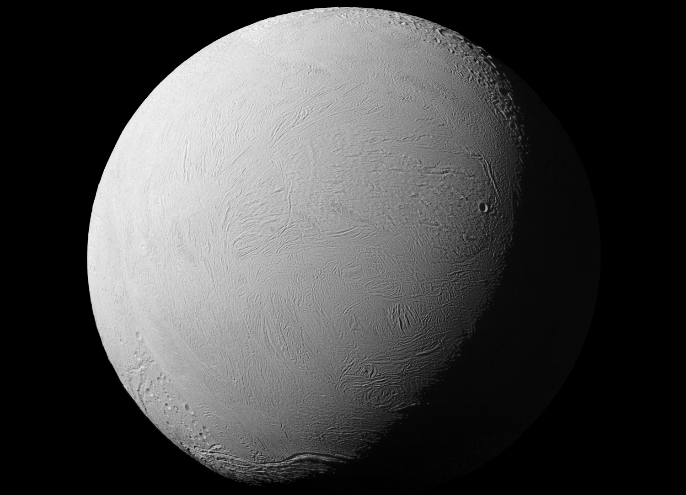
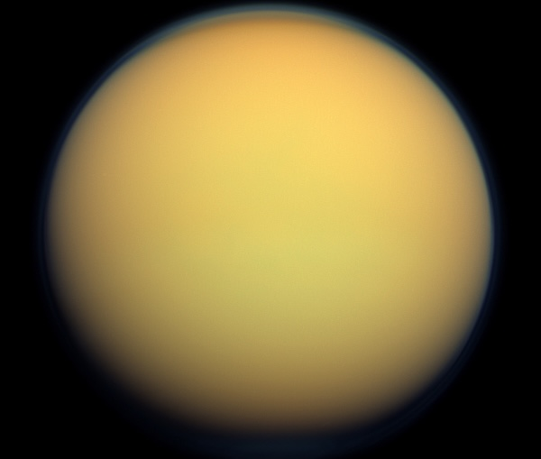

When people think of planets that could harbor life, they often envision Earth clones—an ocean on the surface, continents, and a suitable atmosphere that gives it that habitable touch. This mindset is incredibly confining. In fact, the celestial bodies in our Solar System that we think have the best chance of fostering life don't look anything like that. They aren't even planets! The candidates I'm going to talk about are moons—moons that hide oceans beneath their crusts, creating an ideal environment where life could flourish.
On Earth, the oceans are the most prominent feature of Earth's surface, covering about 70% of it. If an alien species looked at Earth through a telescope, they'd assume that, if life exists, the planet is dominated by some kind of sea creature. Conversely, when aliens—in this case, humans—look at these subsurface ocean worlds, all they see are cold, distant moons with nothing to offer.
But before we get ahead of ourselves, how do we know these moons have an ocean beneath their crust? It's pretty straightforward: we've sent out space probes to observe celestial objects in our Solar System, and we've discovered interesting characteristics that some moons have, pointing toward a hidden ocean. These findings came from geysers, their magnetic fields, and gravity measurements. If you want a more in-depth understanding of how we actually find these out, check out my previous blog called Europa: The Ocean Moon That Could Harbor Life, where I discussed the actual process of how we discover Europa's ocean.
Enceladus is one of Saturn’s 274 confirmed moons, but it stands out among the rest. We’ve observed active geysers on its surface spewing water vapor and ice grains from a subsurface ocean into space. Analysis of those plume samples shows the moon contains many of the chemical ingredients thought necessary to support life. Not to mention, it likely has hydrothermal vents at the bottom of its ocean—if Earth is any indication, hydrothermal vents host some of the most biodiverse life.
Europa, in essence, is NASA's favorite child, getting all the attention. But who could blame them? Europa is our best shot at finding life beyond Earth because, if you haven’t already noticed, Saturn is much farther from Earth than Jupiter. Wasting all that energy to visit a moon like Enceladus to search for life is pretty pointless, because Europa is much closer and has promising data: saltwater signatures, geysers spraying into space, hydrothermal vents, and Jupiter’s radiation. Enceladus has almost all of these too, but since it’s so out of reach, it really isn’t in the cards for NASA right now.

Titan is strange… but not in an unfavorable way: it’s the only moon in the Solar System with a thick atmosphere. And it’s not just any atmosphere—it’s rich in methane. Sunlight should be breaking down that methane, but something keeps replenishing it. Scientists think cryovolcanoes are actively releasing chilled water and other volatiles. Where does that chilled water come from? From a subsurface ocean, of course. That’s not our only evidence, though: the Cassini spacecraft collected gravity measurements that point to an ocean beneath the moon’s crust.
NASA and the European Space Agency have been heavily fixated on these moons because, frankly, they’re our only shot at actually finding life in our Solar System. While Mars might have once harbored life, any organisms there are probably extinct. These moons have a real shot at revolutionizing how we look at ourselves and the rest of the cosmos.